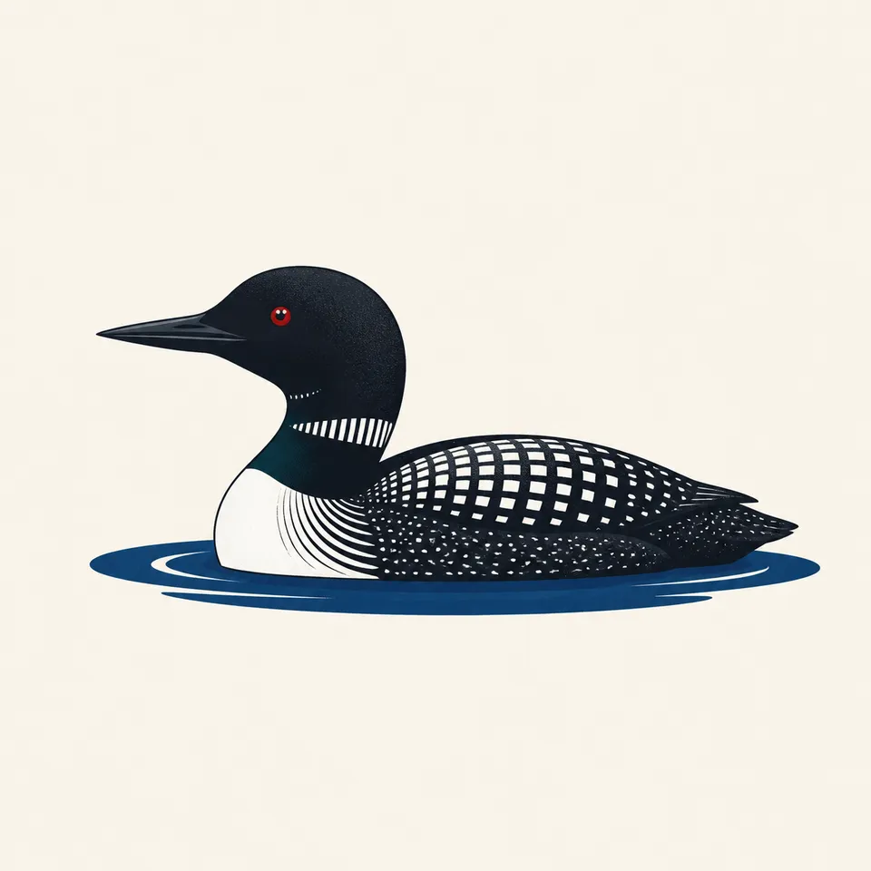
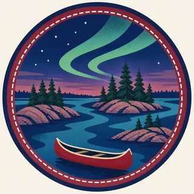

01
The big lakes
Four major lakes and 26 smaller interior lakes make up the park's nearly 84,000 water acres, a network of routes largely unreachable by road.
TrailMark Archive Edition
Minnesota | Canadian Border
Signed into law by President Richard Nixon in 1975, named for the French-Canadian fur traders who once paddled these border waters.
Archive No. TM-VOYA-061
National Park since 1975
Collection Border Waters
Park Overview
President Richard Nixon signed Voyageurs National Park into law in 1975. The legislation aimed to preserve the scenery, geology, and waterway system that formed part of the historic canoe route of the voyageurs.
The park spans about 218,000 acres, nearly 84,000 of them water, roughly 39 percent of the total, across four major lakes and 26 smaller interior ones along the Minnesota-Canada border.
The park is named for French-Canadian fur traders, the voyageurs, whose canoe routes through these border waters helped open the northwestern United States to European trade in the 18th and 19th centuries.
Emotional Thesis
The header painting sets a red canoe resting on granite shoreline rock beneath the aurora over still water and pine-covered islands, a scene close to what Voyageurs offers on a clear night. Nearly 40 percent of the park is water, and much of it is reachable only by boat.
The park has worked toward International Dark Sky Park status, beginning major steps with the International Dark-Sky Association in 2019, part of an effort that had already raised the share of night-friendly park lighting from about 25 to 68 percent, with a longer-term goal of full conversion.
Landscape Highlights
01
Four major lakes and 26 smaller interior lakes make up the park's nearly 84,000 water acres, a network of routes largely unreachable by road.
02
The park exists to preserve part of the historic canoe route used by voyageurs, whose paddling and portaging opened trade across the northwestern United States.
03
Far from major light sources, the park's night sky, worked toward Dark Sky Park status since at least 2019, regularly offers aurora viewing over its lakes.
Wildlife
Common loons nest and raise young on the park's lakes each summer, their calls a defining sound of the border-waters wilderness. The extra drawing, a loon on still water, is the archive's image of that lake ecosystem.

01
Gray wolves, numbering 30 to 50 across 6 to 9 packs, are the park's dominant predator, preying on deer, moose, and beaver.
02
The park's extensive water acreage supports fish and waterfowl populations distinct from the forest wildlife found on its islands and shorelines.
03
Beaver activity shapes shoreline habitat throughout the park, part of the same water-based ecosystem the loons and wolves both depend on.
Geology
Voyageurs' identity comes from its lake network as much as from any single geologic feature, granite shoreline and forested islands shaped by glacial history across the border-lakes region.
01
Roughly 39 percent of the park's total acreage is water, an unusually high proportion among national parks.
02
The park's four major and 26 minor lakes were carved and connected by glacial processes typical of the wider Boundary Waters region.
03
No page opened for this essay states a specific glacial-age figure for the park's lake basins; none is given as a precise number.
The main season for boating, canoeing, and reaching most of the park's water-access-only areas.
Cooler temperatures and fall color along the shorelines; boat traffic thins as the season progresses.
Frozen lakes open the park to snowmobiling, ice fishing, and cross-country skiing, an entirely different mode of access than summer.
Ice-out timing varies by year and controls when boat access reopens; conditions should be checked before an early-season visit.
Photography
A pine-covered island alone could be almost any northern lake. The specific water-to-land ratio, and a dark sky when conditions allow, are what mark this park.
01
Calm mornings or evenings on the lakes can mirror the shoreline and sky, doubling the visual impact of a shot.
02
Dark-sky viewing requires clear nights and some luck; the park's ongoing lighting improvements are meant to protect exactly this kind of shot.
03
A canoe or red hull in frame, echoing the header painting, ties an otherwise generic northern lake scene specifically to a voyageur-route park.
Field Notes
Almost forty percent of this park is water, which means most of it can only be understood from a canoe.
TrailMark Field Notes

Badge Story
The badge fails if it is only pine trees. A canoe and visible water, under a night sky, are what tie the mark to this water-based park and its fur-trade name.
Deep night blues and purples against aurora green.
A canoe hull, red or another traditional color, grounding the mark in the voyageur history.
No single dramatic peak or canyon; the park's identity is water and sky, not elevation.
Archive No.061
LocationBorder Waters
ReleaseVoyageur Route Mark
Stewardship / Safety
Most of Voyageurs is reachable only by water; boating skill and preparation matter as much as hiking skill does in a land-based park.
Check ice conditions carefully before any winter travel onto frozen lakes; thickness varies across the park and season.
Boat safety equipment and weather awareness are essential; open water on the larger lakes can turn rough quickly.
Keep distance from wolves and other wildlife; sightings are a privilege of a healthy population, not an invitation to approach.
Support the park's dark-sky lighting efforts by minimizing your own light use at night if camping within the park.
Current conditions, fees, and alerts are on the National Park Service site.
Continue the Archive
Isle Royale is a single island reached only by boat or float plane across Lake Superior; Voyageurs is a network of interconnected lakes along a land border. Everglades, also already open, is the archive's other park where water access outweighs road access.